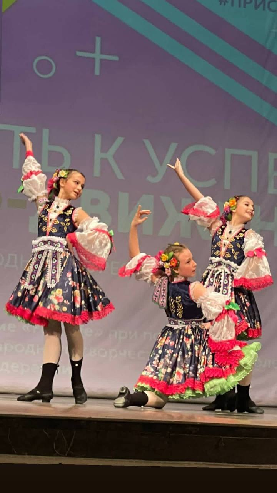
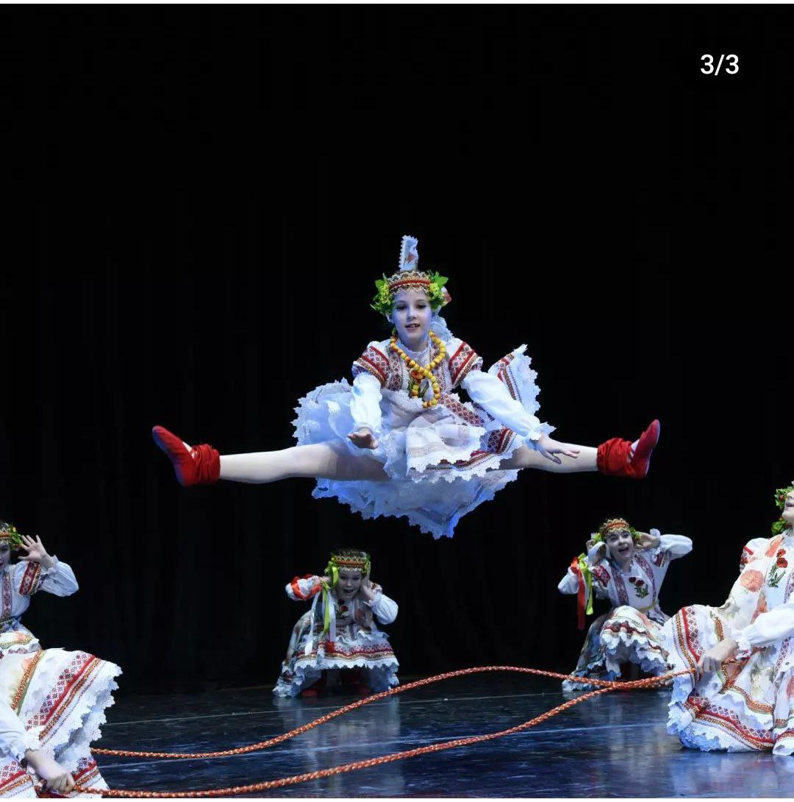
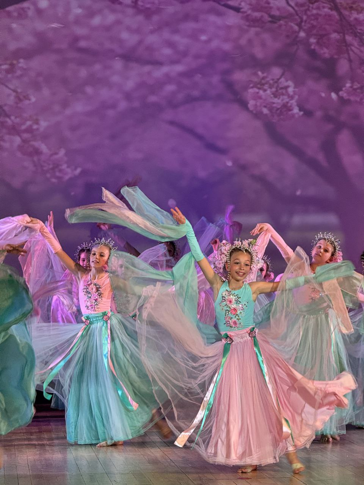
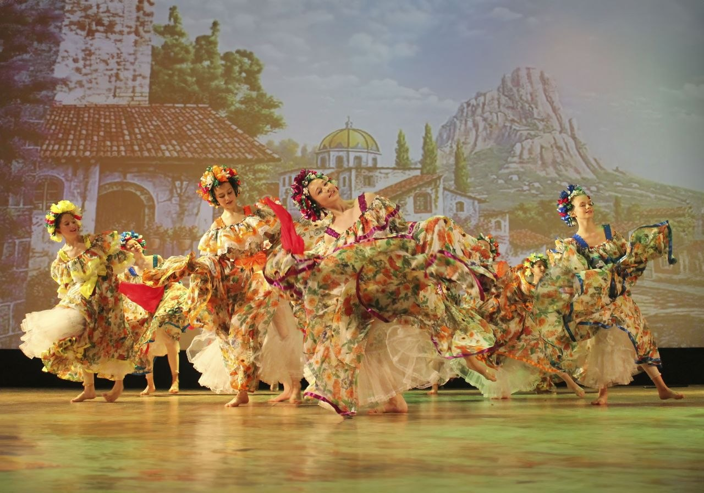

Педагог с 30-летним опытом отвечает на самые частые вопросы о детских танцах. Без воды — только практика.

Почему «не стала чемпионкой» — не показатель. Что педагог видит в ребёнке за год занятий и как это измерить без медалей.
Читать
Усталость, страх сцены или просто лень? Три разных сценария и три разных ответа. Когда стоит настоять, а когда сделать паузу.
Читать
Строгих требований к физическим данным нет, зато есть сцена, образ и живые эмоции. Объясняем разницу и помогаем выбрать.
Читать
Произвольное внимание, усидчивость, умение слушать инструкцию — всё это хореография прокачивает лучше, чем прописи. Разбираем механизмы.
Читать
Почему трёхмесячный перерыв откатывает прогресс на 2–3 месяца — и что мы предлагаем вместо пустых каникул.
Читать
Что делать, если дочка хочет танцевать, но теряется в группе. Советы педагога и три признака правильной студии для тихих детей.
Читать7 безопасных упражнений с важными предупреждениями о том, чего нельзя делать. И почему занятия с педагогом всё равно необходимы.
ЧитатьЧестный разбор плюсов и минусов обоих направлений. Кому подойдёт спорт, а кому — сцена.
Читать10 критериев от педагога с 30-летним опытом. На что обращать внимание и о чём спросить на пробном уроке.
Читать
Таблица по возрастам: одежда, обувь, что взять с собой. Список типичных ошибок родителей.
ЧитатьНе только осанка и гибкость. Танцы развивают концентрацию, эмпатию и уверенность в себе.
ЧитатьБалет, эстрада, contemporary, народный — разбираем все 4 стиля под характер девочки и ваши цели.
ЧитатьВозрастной гид: что развивают занятия в 3, 5, 7, 10 лет. Как выбрать первую группу и не ошибиться.
ЧитатьПервый урок бесплатный. Подберём группу по возрасту — от 3 до 14 лет.
Записаться на пробный урок